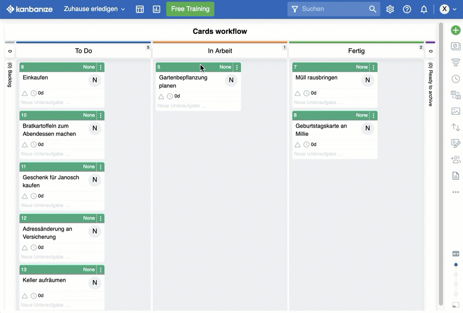
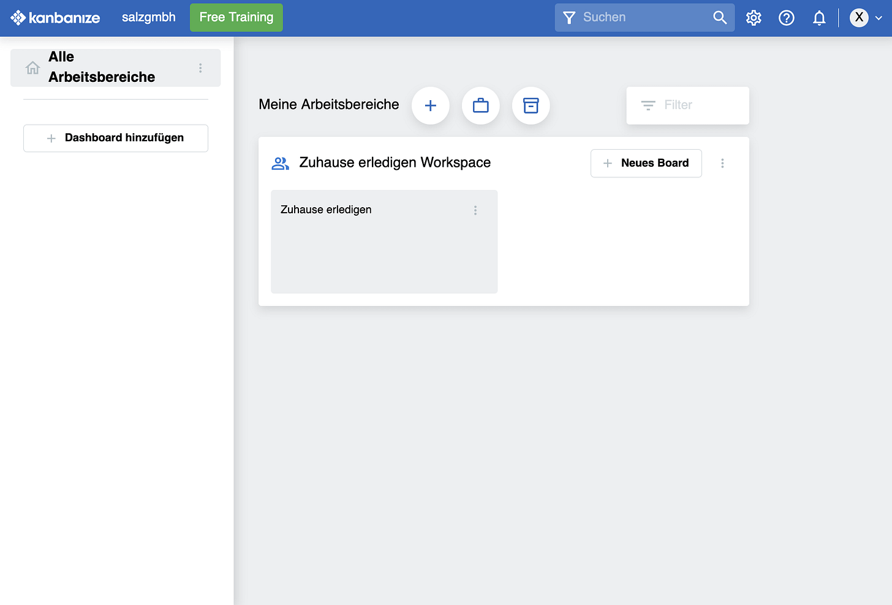
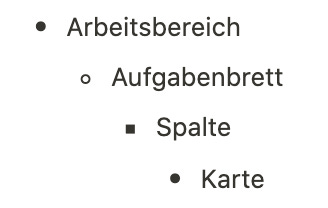
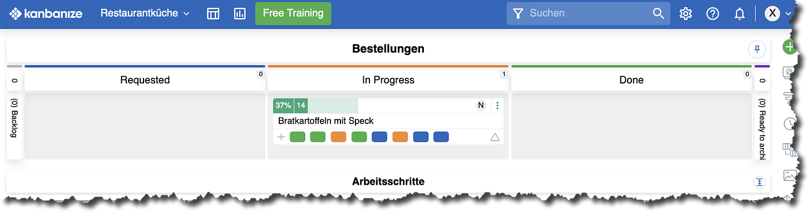
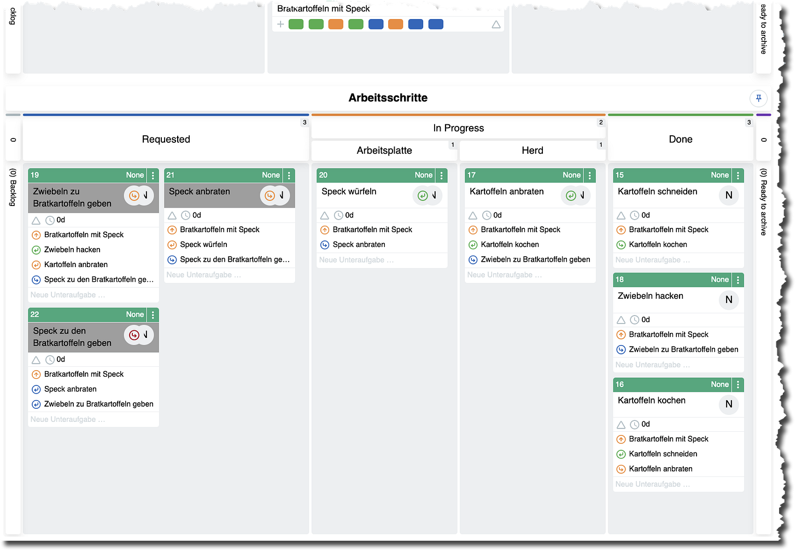
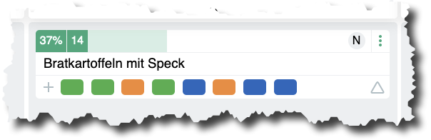
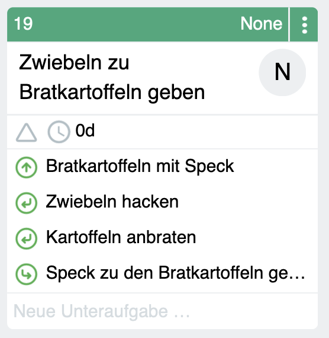

Kollaboration im Office mit Kanbanize
“Was bisher geschah” liest du im ersten Teil dieser kleinen Artikelserie.
Das Produkt, von dem ich derzeit für die Aufgabenbearbeitung im Team begeistert bin, ist Kanbanize. Es wird von einem Unternehmen in der EU, in Bulgarien, entwickelt und weltweit angeboten. Die Funktionalität ist massiv, der Support schnell und freundlich, die Weiterentwicklung kontinuierlich. Deutsch kann als Sprache für die Benutzeroberfläche eingestellt werden. Und für alle, die auf Sicherheit setzen und die DSGVO im Blick haben müssen: Der Standort der Server, über die Kanbanize genutzt wird, kann gewählt werden; auf Wunsch liegen die Daten in Europa. Kanbanize erfüllt höchste Sicherheitsstandards und wird von Unternehmen eingesetzt, die damit hunderte Kanbanboards mit tausenden Benutzern führen. Ich bin schwer beeindruckt.
Aber wichtiger ist zunächst die Frage: Ist dieses leistungsfähige Tool auch einfach genug für einen ersten Einstieg in den Umgang mit Kanbanboards?
Nach meinen ersten Erfahrungen mit Kanbanize hatte ich meine Zweifel. Ich war etwas verwirrt ob der Möglichkeiten. Der Registrierungsprozess ist etwas langwieriger, es werden Fragen gestellt, die ich nicht sofort einordnen konnte, und wie sich Kanbanboards in der Standardeinstellung präsentieren ist nicht so simpel, wie bei Trello.
Zweite Chance für Kanbanize
Ich habe mich davon aber nicht abhalten lassen und Kanbanize eine zweite Chance gegeben. Mein Urteil jetzt: Es eignet sich auch als Tool für Einsteiger. Damit zieht es an Trello vorbei. Für Unternehmen kann es sowohl „Einstiegsdroge“ sein wie dauerhafter Begleiter in wachsender Bedürfnislage.
Zunächst ein Vergleich mit dem Trello-Board oben:

Ein Kanbanize-Board kann genauso simpel aussehen und bedient werden wie ein Trello-Board. Wer nicht mehr will für den Anfang, muss keine Angst haben, sich zu überfordern. All die Icons auf der rechten Seite, all die Optionen auf den Karten und für Aufgabenbretter müssen nicht genutzt werden.
Ich würde sogar sagen, dass der Kanbanize “Schreibtisch” aufgeräumter ist als der von Trello:

Die grundsätzliche Struktur ist auch hier (etwas vereinfacht):

Die Benutzerverwaltung ist bezogen auf Arbeitsbereiche und Kanbanboards. Innerhalb von Kanbanboards können alle Benutzer alles sehen. Das halte ich für naheliegend und konsequent. Wer vor einem analogen Kanbanboard steht, kann auch alles sehen.
Innerhalb eines Kanbanboards zeigt sich jedoch schnell, dass Kanbanize weit mehr bietet als Trello. Das ist es, was Kanbanize bei der Registrierung auch gleich an den Start bringen will; deshalb fällt sie etwas umfänglicher aus als bei Trello.
Einerseits verstehe ich, dass Kanbanize glänzen möchte; andererseits jedoch wird manchem damit der Einstieg erschwert, finde ich. Ich jedenfalls war darauf nicht vorbereitet bei meiner ersten Evaluation.
Kanbanize: Abbildung von Initiativen
Dabei ist es gar nicht schwierig zu verstehen, was Kanbanize da “out of the box” vorführen will. Man hat sich nämlich der obigen Perspektivfrage gründlich angenommen. Wer in Kanbanize ein neues Kanbanboard aufsetzt, bekommt gleich zwei; Kanbanize nennt diese Workflows. Die Kombination besteht aus
- einem Workflow für Aufgabenpakete, auch Projekte oder Initiativen genannt, und
- einem Workflow für Aufgaben als Aktivitäten.
Ich will das am Beispiel einer vereinfachten Restaurantküche erklären.
Das Kanbanboard zeigt oben einen darin eingelegten Workflow für die bestellten Gerichte:

Die durchlaufen die Zustände bestellt (Requested), in Arbeit (In Progress) und fertiggestellt und zum Servieren bereit (Done).
Dieses Brett ist Substantiv-fokussiert. Es geht um Bratkartoffeln oder Salat Nizza oder Spargelchremesuppe. Neue Bestellungen kommen links herein und werden über das Brett nach rechts gezogen im Zubereitungsprozess. Auf dieser Ebene ist das ganz einfach mit drei Bearbeitungszuständen.
Kanbanize nennt dieses Brett den Initiativenworkflow. Der Begriff hat mich zuerst verwirrt. Was ist eine Initiative? Ich denke, man wollte einen unverbrauchten allgemeinen Begriff für diese Ebene benutzen, um nicht zu viel zu suggerieren, was auch abschrecken könnte, weil es einschränkend klingt. Leider ist erstmal das Gegenteil bei mir passiert.
Aber irgendwann ist mir klar geworden: Das ist die Ebene von Projekten. Sie sind eine Art von Initiative in Organisationen. Hier geht es um die Dinge, die zu erledigen sind, um größere, um große Dinge.
Solange jedoch nur Kleinkram anfällt, kann man sich mit diesem Brett bescheiden — oder es löschen. Denn es gibt ja noch einen zweiten Workflow darunter. Im Beispiel enthält er die Arbeitsschritte, die nötig sind, um eine Gericht zuzubereiten.

Dieses Board entspricht den obigen Beispielen mit dem häuslichen Kanbanboard. Hier stehen die Aufgaben für Aktivitäten. Die gezeigten sind die, die zum in Arbeit befindlichen Bratkartoffelgericht gehören. Dessen Zubereitung ist schon etwas vorangeschritten: Zu erkennen ist das nicht nur an den Karten in der Done-Spalte, sondern auch an den Farben der Kartensymbole auf der Karte des Gerichts:

Grün steht für erledigte Aufgaben, orange für die in Arbeit befindlichen und blau für solche, die noch nicht begonnen wurden.
Mehrere Perspektiven in einem Board
Es ist diese Möglichkeit für zwei Perspektiven auf einem Aufgabenbrett, die Kanbanize schon über Trello hinaus trägt. Was mich zunächst hat zögern lassen, ist also ein erster entscheidender Vorteil — ohne dass die grundsätzliche Einfachheit verloren wäre. Wer keine Aufgabenpaketen oder Aktivitäten planen will, der löscht einfach kurzerhand das entsprechende Brett. Dann ist nur eines übrig wie bei Trello.
Inzwischen habe ich allerdings gelernt, mit beiden Perspektiven im Aufgabenbrett zu leben. Ich empfinde sie als vorteilhaft. So kann ich Aufgaben je nach Bedarf auf der einen oder anderen Ebene planen:
- Kleinere Aufgaben stelle ich gleich im unteren Teil als Aktivitätsaufgabe ein. Sie stehen für sich allein.
- Größere Aufgaben formuliere ich als Arbeitspaket im oberen Teil — und zerlege sie dann in Aktivitätsaufgaben, die ich im unteren Teil einplane. Das Bratkartoffelgericht (Arbeitspaket) macht es mit den Zubereitungsschritten (Aktivitätsaufgaben) vor.
Bei diesem Vorgehen kann ich auch sofort von einem weiteren Kanbanize-Feature profitieren: der Möglichkeit, Abhängigkeiten zwischen Aufgaben zu definieren.
Aufgabenabhängigkeiten in Kanbanize
Aufgaben stehen oft in einer Vorgänger-Nachfolger-Beziehung: zuerst muss die eine erledigt werden, dann die andere. Vielleicht habe ich das noch im Kopf, wenn ich ganz entspannt bin. Doch wenn ein Team an einem Arbeitspaket werkelt und der Tag hektisch ist, können solche Feinheiten auch mal untergehen. Das kann zu Verschwendung aufgrund von Konflikten und Unsicherheiten und Multi-Tasking führen.
Mit den Abhängigkeiten in Kanbanize lässt sich das aus dem Stand vermeiden. Beispielsweise muss der Speck zuerst fertig gewürfelt sein, bevor er angebraten werden kann. Und er muss erst fertig gebraten werden, bevor er zu den schon fertig angebratenen Kartoffeln kann. Die Karte zum Anbraten ist deshalb eine Nachfolgerkarte des Schneidens des Specks.
Nachfolgerkarten können erst in Arbeit genommen werden — entweder in der Unterspalte für die Arbeitsplatte oder der für den Herd; ein weiteres Feature von Kanbanize —, wenn die Vorgängerkarte fertiggestellt wurde. Ist das nicht der Fall, meldet Kanbanize das und lässt die Platzierung nicht zu.
Karten, die noch nicht begonnen werden können aufgrund einer solchen Beziehung, sind grau markiert. Welche Beziehungen es gibt, zeigt jede Karte mit kleinen Pfeilen in die entsprechende Richtung im Workflow:

Auch wenn das schon deutlich über Trellos Angebot hinausgeht, kratzen diese Features nur an der Oberfläche der Funktionalität von Kanbanize. Die bietet sehr weitgehende Strukturierungsmöglichkeiten für Kanbanboards und darauf aufbauend dann auch Analysewerkzeuge. Das ist konsequent, denn wie soll die Arbeit im Office verbessert werden, wenn unklar ist, wie der Produktivitätsstand heute ist. Es braucht Zahlen, mit denen heute mit gestern verglichen werden kann, um die Schrauben der Kollaboration zu finden, an denen noch gestellt werden muss.
Das Ziel: flüssige und entspannte Arbeit.
In Simulationen, mit denen die Zusammenarbeit an Kanbanboards geübt werden kann, ist das sehr schön zu erleben. An einem Nachmittag lässt sich so das Potenzial hautnah spüren, dass in mehr Systematik durch Aufgabenbretter schlummert.
Fazit
Email, Kalender und Excel zur Koordination waren gestern. Trello ebenfalls, muss ich nun sagen. Auch wenn Trello für den, der wirklich nur das Einfachste mit einem Kanbanboard tun will, ein geeignetes Einstiegstool bleibt, empfehle ich heute Kanbanize von Anfang an. Es macht keinen Sinn, erst das eine Tool zu benutzen, um später umzusteigen. Kanbanize ist nicht wirklich komplizierter als Trello, auch wenn es sich für den Unbedarften vielleicht so darstellen mag. Deshalb war es mir ein Anliegen, den Nebel hier ein wenig zu lichten. So ist das Wichtigste für den Einstieg in die Kollaboration mit digitalen Aufgabenbrettern auch bei Kanbanize freigelegt.
Gerne gebe ich persönlich eine Einführung oder leite durch eine Simulation. Auf Wunsch kann ich auch eine 3-monatige Testlizenz vergeben. Es gibt viel zu entdecken. Aufgabenbrettern und Kanbanize eine Chance zu geben, lohnt sich.
Dieser Artikel erschien zum ersten Mal in meinem Newsletter bei Substack hier im April 2022. Dort finden Sie auch weitere Artikel und können den Newsletter per E-Mail abonnieren.
Weitere Artikel

Regeln für KI im Office
ChatGPT & Co haben sich schnell in die Herzen und Alltag von vielen Menschen im Berufs- und Privatleben gespielt. Diese neuen Werkzeuge eröffnen uns viele Chancen, nicht nur effizienter zu werden, sondern auch kreativer. Aber …

KI als Copilot für die Assistenz
KI in Form von ChatGPT & Co sind hervorragende neue Werkzeuge im Office-Alltag, um produktiver und ja, auch kreativer, zu werden. Neugier statt Angst ist angezeigt im Umgang mit diesen Werkzeugen, die wie andere Werkzeuge auch …